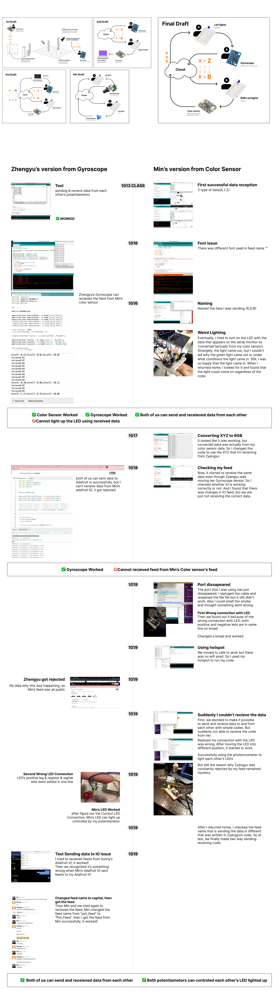
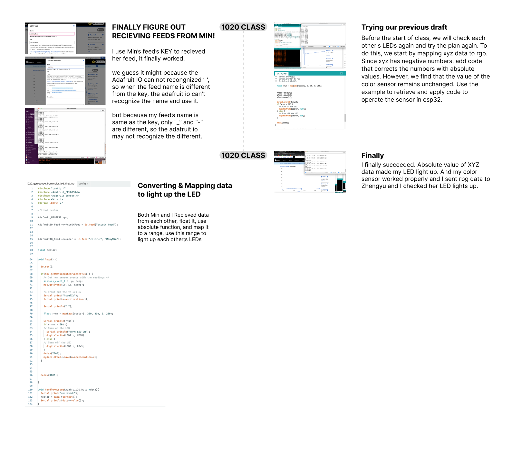

Creative Tech_Project 2_Synthetic Relationships
Team Numbers: Min, Zhengyu
The most important part of our project is the conversion of data. XYZ location data can be used as RGB color data and returns to RGB form through the color sensor. We operate the same type of output (LED) through different types of data transmitted and received simultaneously. Our goal was to achieve that different data formats were converted and used as a source to operate each other's sensors, and we are delighted to succeed after many failures.

VIDEO PART:
-TEST WITH SUNNY
-MIN'S VERSION
-ZHENGYU'S VERSION

VIDEO PART:
-FINAL ON CLASS
-FINAL IN STUDIO